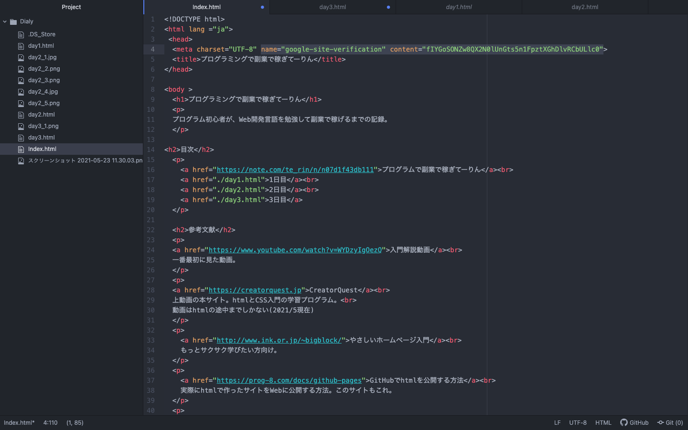

Webにhtmlを公開することはできたが、Googleの検索に引っ掛からなかった。
調べてみると
GoogleにこのサイトのURLを送信して知らせないといけないらしい。
まずGoogle Search Consoleに登録する。
このサイトのURLをプロパティとして追加、表示されるタグをhtmlのheadタグに埋め込む

上述のサイトの情報は古いGoogle Search Consoleの情報だったので、
新しいバージョンでの方法
を参考に、URL検査でサイトURLをGoogleに送信する。
できたかな？
Googleで検索してみる。
北あああああああああああああああああああああ！！！！！！！！
htmlの勉強ではないけど、エンジニアやってる感がして楽しかった。
次からはhtmlの勉強再開。
まだまだページが見づらいので、CSSの方にも早く進みたい！